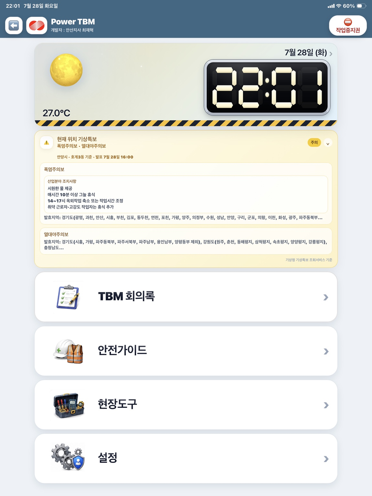
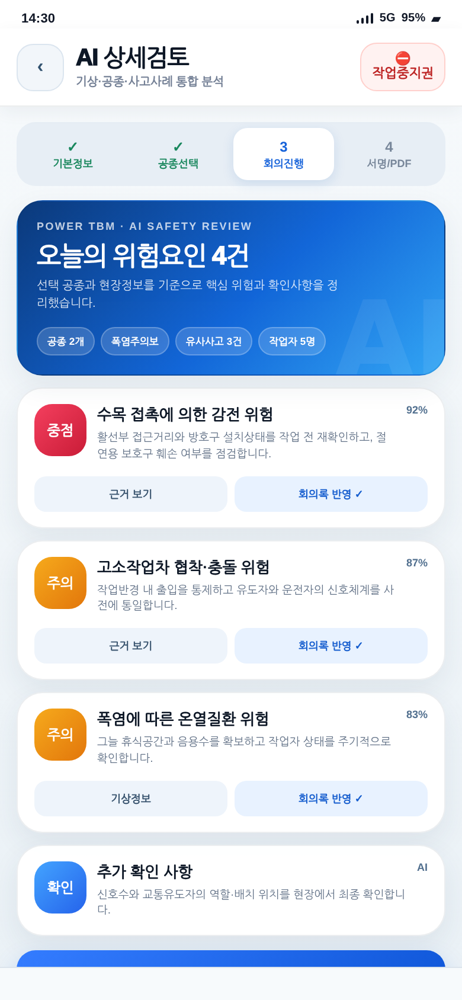
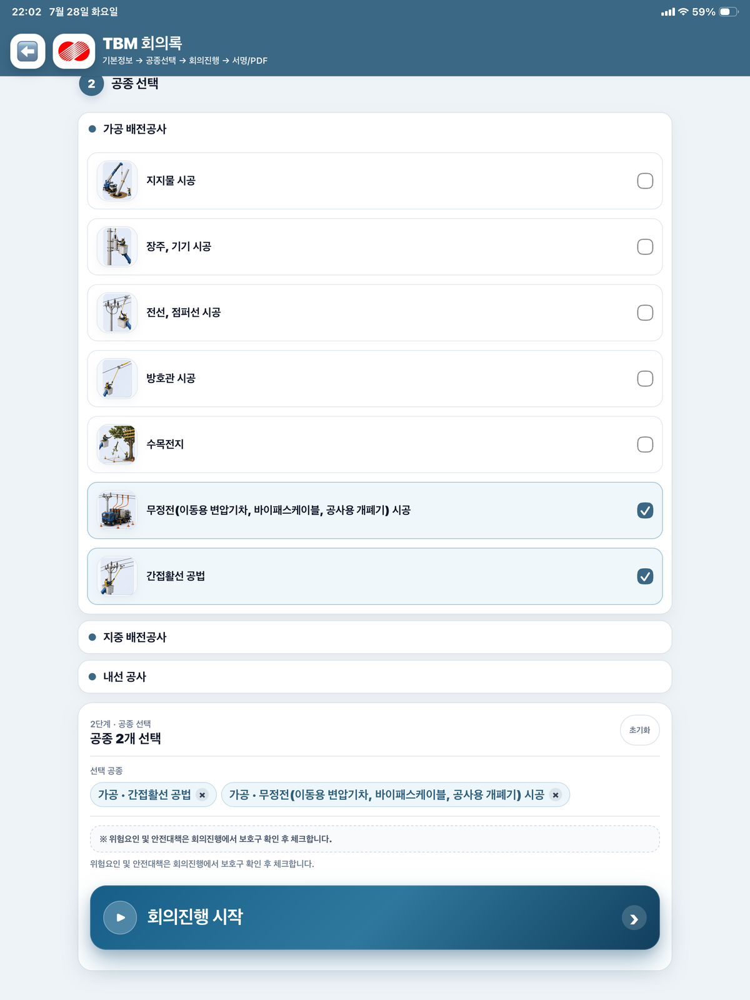
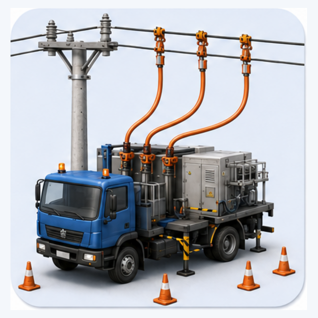
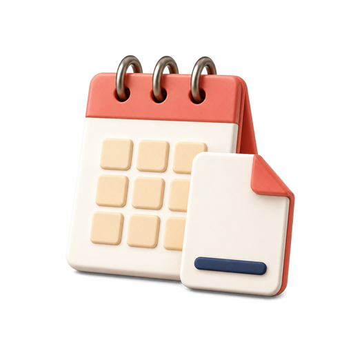

01
먼저 보여줍니다
공종과 현장 여건을 기준으로 필요한 위험요인과 확인사항을 회의 전에 정리합니다.
공종·기상·사고사례·작업자 정보를 한곳에서 검토하고, 회의 진행부터 원격서명과 PDF 보관까지 하나의 흐름으로 연결합니다.


작업 전 확인해야 할 정보가 흩어지지 않도록 모으고, 책임자가 판단하고 기록하는 과정을 자연스럽게 이어 줍니다.
공종과 현장 여건을 기준으로 필요한 위험요인과 확인사항을 회의 전에 정리합니다.
AI는 추천하고, 시공관리책임자가 현장 상황을 확인한 뒤 최종 반영합니다.
서명된 회의록을 PDF 원본으로 저장하고 날짜별 캘린더에서 다시 찾을 수 있습니다.
공종별 기본 위험요인에 기상, 유사사고, 작업자 상태를 더해 오늘 현장에서 확인할 내용을 정리합니다.

선택 공종과 현장정보를 바탕으로 중점·주의·확인 항목을 구분해 제안합니다.
현재 위치의 날씨와 기상특보를 작업 위험 검토에 함께 반영합니다.
카카오톡 링크와 QR을 이용해 작업자별 서명을 받고 진행 상태를 확인합니다.
완료된 회의록을 날짜별로 확인하고 기간을 선택해 ZIP으로 묶을 수 있습니다.
공지사항, 음성메모, 거리뷰, 응급의료시설, 비상연락망을 빠르게 엽니다.

공사명, 장소, 책임자, 작업자 정보를 준비합니다.

복수 공종을 선택하고 위험요인을 하나로 병합합니다.
건강상태, 보호구, 현장조치와 AI 검토를 확인합니다.

전자서명을 완료하고 PDF 원본을 캘린더에 보관합니다.
복잡한 메뉴를 줄이고 작업 흐름에 따라 다음 단계가 자연스럽게 이어지도록 구성했습니다.
날씨·기상특보와 핵심 메뉴를 한눈에 확인합니다.
전시와 발표에서 Power TBM의 정체성을 직관적으로 전달할 수 있도록 앱 인트로 영상을 함께 구성했습니다.
Power TBM은 배전현장의 안전회의 절차와 실제 사용 경험을 바탕으로 기획·설계·개발한 프로젝트입니다.
 모바일에서 바로 열기
power-tbm.vercel.app
모바일에서 바로 열기
power-tbm.vercel.app